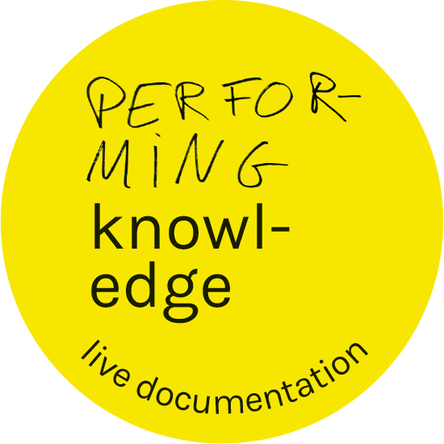

<!DOCTYPE html>
<html lang="en" dir="ltr">
  <head>
    <meta charset="utf-8">
    <meta name="viewport" content="width=device-width, initial-scale=0">

    <title></title>
    <script type="text/javascript" src="assets/js/jquery-3.3.1.min.js"></script>
    <script type="text/javascript" src="assets/js/pk.js"></script>
    <link rel="stylesheet" href="style.css">
  </head>
  <body>

  </body>
</html>
<body>




<p class="section"><span class="s8">documentation directe : </span><span class="s5">lecture à 19h20</span><br></p>


<p class="section"><span class="s1">21 juin 2018</span><span class="s4">msh paris nord</span><p class="p1">
<p class="p1"><span class="s1">le personnage est un perroquet kéa nestor-notabiliste qui habite dans une île du sud de la Nouvelle-Zélande</span></p>
<p class="p1"><span class="s2"><span class="Apple-converted-space"> </span></span><span class="s1">Son intelligence est comparée à celle des humains</span></p>
<p class="p1"><span class="s1">Wattana, (un orang outan): quand elle est arrivée à Paris, elle a commencé à faire des nœuds</span><span class="s2"> ; 5 ou 6 kéas étaient autour de ses baskets et </span><span class="s1">très patiemment ils défaisaient les lacets</span><span class="s2">.<span class="Apple-converted-space"> </span></span></p>
<p class="p1"><span class="s1">Une pensée pour Coco.</span></p>
<p class="p1"><span class="s1">Après avoir créé son artefact, le kéa l’a montré à Chloé, l’a posé devant elle, et il est parti. C’était un cadeau. Il faut démonter sans abîmer, reconstruire, </span><span class="s3">proposer un autre format de recherche</span></p>
<p class="p2"><span class="s3">Des savoirs incarnés et expérientiels<span class="Apple-converted-space"> </span></span></p>
<p class="p3"><span class="s4"></span><br></p>
<p class="p1"><span class="s5">Le sol tremble sur la course des participants à l'atelier…</span></p>
<p class="p2"><span class="s3">Un parcours hybride – partagé sur une ligne invisible à être sans cesse réinventée</span></p>
<p class="p2"><span class="s5"><span class="Apple-converted-space"> </span>TATATATATATATATTATatatatatatatatatatatatata </span><span class="s3">Des expériences sensibles pour colorer notre écoute !</span></p>
<p class="p2"><span class="s5">vacille !!  Vocale. Tatatata…Mmmmh… </span><span class="s3"> Comment tenir les écarts entre artiste et chercheur ?</span></p>
<p class="p2"><span class="s5">Souffle, ressentir le sol, marche.<span class="Apple-converted-space"> </span></span></p>
<p class="p2"><span class="s6">Chercher l’espace de la bouche.</span></p>
<p class="p2"><span class="s5">Acceleration. Tatatata…Mmmmh… </span><span class="s3"> Partir du laboratoire, de nos pratiques de scène</span></p>
<p class="p4"><span class="s7">Dispersion. </span><span class="s8">Passé-Présent. Parti pris.<span class="Apple-converted-space"> </span></span></p>
<p class="p2"><span class="s5">Mmmbah (comme les poissons), Babababa…</span></p>
<p class="p2"><span class="s5">Comprendre l'espace. Trois par trois, deux par deux, babababa… </span><span class="s9">travailler avec innocence</span></p>
<p class="p2"><span class="s5">Diagonale et AAAAAaaaaaaah </span><span class="s9">Archive = combustible ≠ fin en soi. </span><span class="s5"> (le son s'échappe). Chef d'orchestre.<span class="Apple-converted-space"> </span></span></p>
<p class="p2"><span class="s3">Le corps n’est pas qu’une enveloppe.<span class="Apple-converted-space"> </span></span></p>
<p class="p2"><span class="s3">Un enfant entre dans la salle… et quelque chose change dans l’air.:<span class="Apple-converted-space"> </span></span></p>
<p class="p2"><span class="s5">L'espace vide est dangereux.<span class="Apple-converted-space"> </span></span></p>
<p class="p2"><span class="s6">Ne vous inquiétez pas cette performance a déjà été crash testée par la même équipe.</span></p>
<p class="p3"><span class="s4"></span><br></p>
<p class="p2"><span class="s10"><i>Chapeau ananas, Gâteau rose, Petit fond sonore</i></span></p>
<p class="p2"><span class="s10">chercher la fourchette faire du cirque et de la géographie manger du chocolat verser de l'eau en sursautant en robe avec les ananas sur la tête</span></p>
<p class="p2"><span class="s10">This is art. Keep on dropping scones!</span></p>
<p class="p5"><span class="s3">Une traversée d’enfant</span></p>
<p class="p2"><span class="s3">=&gt; c’était à moi mais je le répète - nous aussi nous avons notre petit moment de performance … samedi 21h au bar du théâtre des Amandiers !</span></p>
<p class="p2"><span class="s5">“<i> J'aimerais que l'on fasse un paysage sonore, de l'orage ou du vent, une machine. J'aimerais que chacun produise un son, dans un cercle, dans l'espace de la pièce : ZAMM, ZUUU, TCHAAANNN !!!</i></span></p>
<p class="p5"><span class="s3">Deuxième traversée d’enfant</span></p>
<p class="p6"><span class="s3">changement d'énergie.... S'éloigner de la logique de l'industrie du théâtre, comment associer ou s'associe le spectateur ?</span></p>
<p class="p7"><span class="s11">Et voilàaaaaa - ta-ci-tuur-no - e-le-men’t-o - po-sse-ssssi-vvvo! Mah ! Mah ! </span><span class="s3">Situation / Détournement/ Dérive - si quelque chose semble digne d’intérêt tu sonnes la cloche</span></p>
<p class="p2"><span class="s5">BRRRououuuoRRRR!!!</span></p>
<p class="p2"><span class="s6">une interview pour sa thèse qui a mal tourné.</span><span class="s12"><span class="Apple-converted-space"> </span></span></p>
<p class="p2"><span class="s3">Danger: le chercheur qui veut devenir artiste. Quand l’université se charge des arts elle les calme// il faut que ça soit non seulement un lieu de partage mais aussi d’affrontement</span></p>
<p class="p2"><span class="s5">(frustration de voir et de ne pas faire) - </span><span class="s9">   Faire l’histoire autrement</span></p>
<p class="p5"><span class="s3">Interroger le savoir ou rendre compte du savoir ? Pas seulement performer/ représenter l’archive, mais savoir pourquoi on le fait.</span></p>
<p class="p3"><span class="s4"></span><br></p>
<p class="p5"><span class="s3">l’esquisse d’une nuit étoilée</span></p>


</body>
</html>
